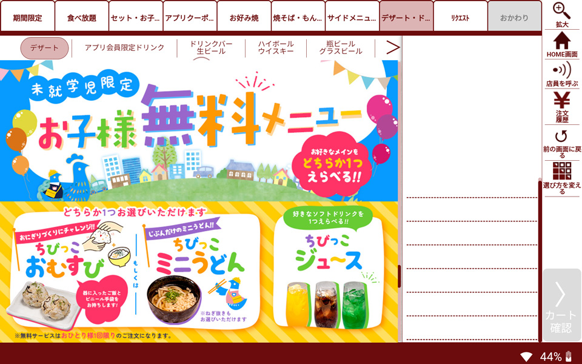
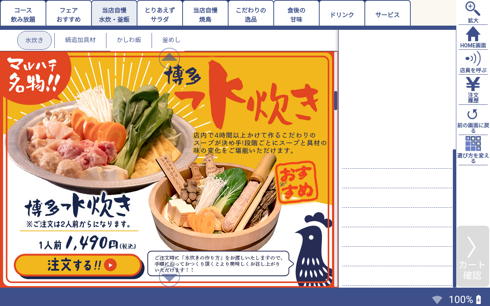
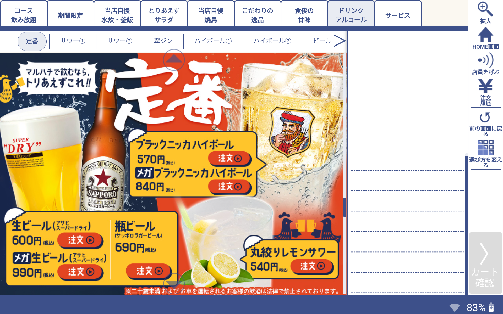
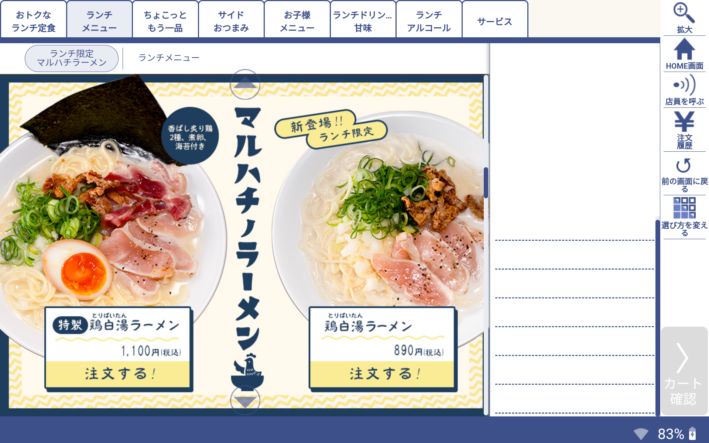
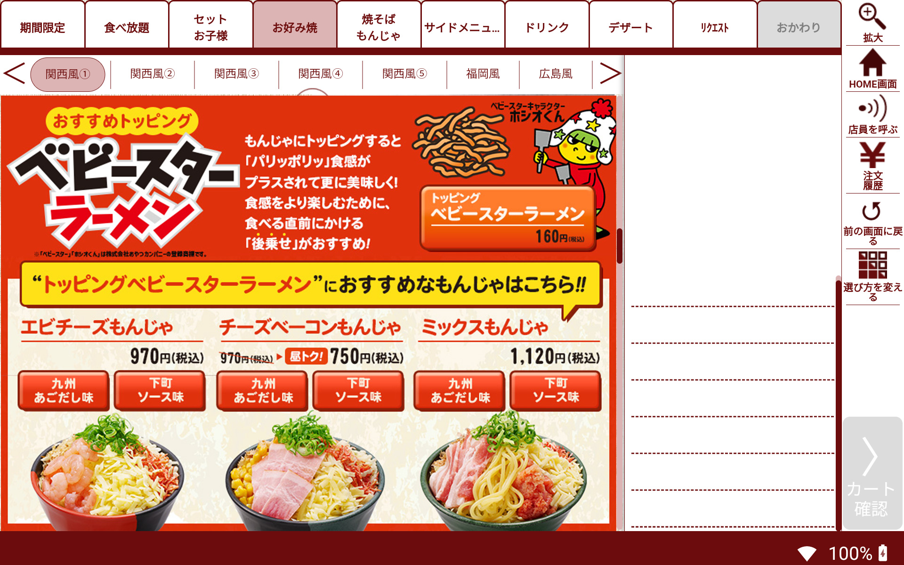
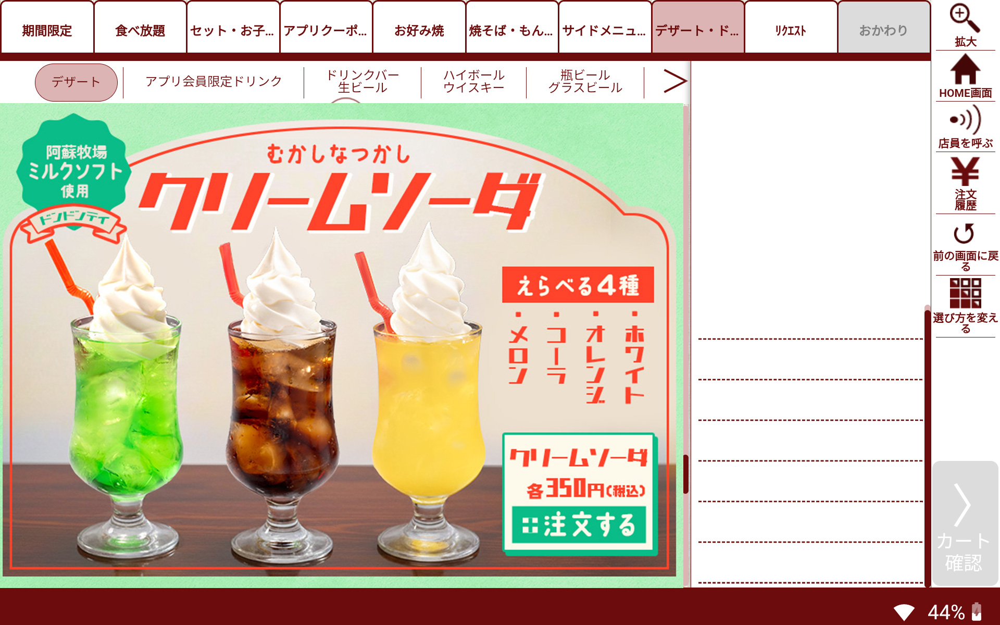

お好み焼き専門店「どんどん亭」明太子フェアメインビジュアル・LP webデザイン メニュー POP × お好み焼き専門店「どんどん亭」明太子フェアメインビジュアル・LP webデザイン メニュー POP お好み焼き専門店「どんどん亭」明太子フェアメインビジュアル・LP作成。 デザイン制作からコーディング、注文用のタッチパネルのデザインまで一貫して担当。 明太子フェアは毎年開催されており、和風のデザインが多かったので印象を変えるためにモダンな雰囲気を心掛けた。 LPはこちら
お好み焼き専門店「どんどん亭」うまかっちゃんコラボ メインビジュアル・LP webデザイン メニュー POP × メインビジュアル 三角POP タッチパネル画面 お好み焼き専門店「どんどん亭」うまかっちゃんコラボ メインビジュアル・LP webデザイン メニュー POP お好み焼き専門店「どんどん亭」で九州の袋ラーメン「うまかっちゃん」とコラボした際のLPを制作。 メニュー紹介を袋麺のパッケージに見立てたり、九州のコラボらしく博多弁を使用したり遊び心あふれるデザイン。 LPのほかにも三角POP・タッチパネル・のぼりなども作成。 LPはこちら
お好み焼き専門店「どんどん亭」韓国チーズフェアメインビジュアル・LP webデザイン POP メニュー イラスト × お好み焼き専門店「どんどん亭」韓国チーズフェアメインビジュアル・LP webデザイン POP メニュー イラスト お好み焼き専門店「どんどん亭」の期間限定フェア「韓国チーズフェア」のメインビジュアル作成。 韓国らしいネオン管のデザインで、今まで社内であまり作成していなかったデザインに挑戦した。 メインビジュアルをもとにLP、タッチパネル等も作成した。 LPはこちら
お好み焼き専門店「どんどん亭」ダブルチーズフェスティバルメインビジュアル・LP作成 webデザイン メニュー POP × お好み焼き専門店「どんどん亭」ダブルチーズフェスティバルメインビジュアル・LP作成 webデザイン メニュー POP お好み焼き専門店「どんどん亭」季節限定フェア「ダブルチーズフェスティバル」LPを制作。 冬のフェアらしく温かみのあるデザインを心掛けた。 LPはこちら
 注文用タッチパネル作成 メニュー × 「トリヤマルハチ」お子様無料メニュー 「トリヤマルハチ」水炊きページ  「トリヤマルハチ」アルコールページ  「トリヤマルハチ」ラーメン  「どんどん亭」トッピングベビースターラーメン紹介ページ  「どんどん亭」クリームソーダ  注文用タッチパネル作成 メニュー 注文用タッチパネルの画像作成。 デザイン性だけではなく、お客様が難しく考えず注文できるよう利便性を常に心掛けた。
お好み焼き専門店「どんどん亭」客席用POP メニュー POP × 初回来店時の案内POP 客席に掲示するお好み焼きの作り方POP クチコミを促すPOP 客席のテーブルに貼付するシール お好み焼き専門店「どんどん亭」客席用POP メニュー POP お好み焼き専門店「どんどん亭」の客席用POP作成。 お客様が一目見て内容が伝わるように心がけている。
鶏料理専門店「トリヤマルハチ」客席用POP・ポスター メニュー POP × 期間限定フェア「北海道フェア」POP 名物「朝挽きつくね」ポスター アルコール半額キャンペーンポスター オトクなメニュー紹介POP 鶏皮110円キャンペーンPOP 鶏料理専門店「トリヤマルハチ」客席用POP・ポスター メニュー POP 鶏料理専門店「トリヤマルハチ」の客席用POP・ポスター作成。 商品の写真撮影からPOP作成まで担当。 「居酒屋っぽさ」と「レトロモダン風」な雰囲気で、お客様が一目見て内容が伝わるように心がけている。
「そば茶屋華元・本膳庵」客席用POP・ポスター メニュー POP × 期間限定メニュー「麻辣そば」POP 期間限定メニュー「牡蛎のキムチチゲそば」POPポスター 期間限定メニュー「秋野菜のミニ天せいろ」POP オープン1周年記念メニューPOP 店頭ポスター 「そば茶屋華元・本膳庵」客席用POP・ポスター メニュー POP 「そば茶屋華元・本膳庵」の客席用POP・ポスター作成。 商品の写真撮影からPOP作成まで担当。 ご年配のお客様が多い業態なので全体的に文字と写真は大きく、読みやすさを意識しつつ和風で高級感のあるデザインを心がけている。
「そば茶屋華元・本膳庵」メニュー イラスト メニュー POP × 「そば茶屋華元・本膳庵」メニュー イラスト メニュー そば専門店「本膳庵」「華元」のメニュー作成。 そば屋らしい和風な雰囲気と高級感を出しつつ、写真やイラストも入れてメニューの詳細が分かりやすいようにした。
居酒屋「牛すじ葱丸」メニュー・イラスト作成 イラスト メニュー × 居酒屋「牛すじ葱丸」メニュー・イラスト作成 居酒屋「牛すじ葱丸」メニュー・イラスト作成 イラスト メニュー メニューに使用したり店舗に貼るためのPOP用イラストを作成した。 メニューの魅力を引き出すことを目指した。